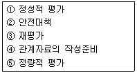
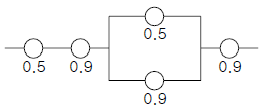
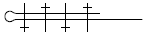
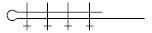
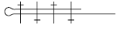
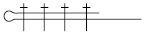

건설안전산업기사 (2003-08-31 기출문제)
1과목: 산업안전관리론
1. 귀마개의 재질 조건을 설명한 것이다. 잘못된 것은?
- 내습, 내열, 내한, 내유성을 가질 것
- 피부에 유해한 영향을 주지 말 것
- 적당한 세정이나 소독에 견딜 것
- 세기나 탄성력이 없이 꼭 끼는 것
(정답률: 77%)

2. 1년간 연근로시간이 240,000시간인 어느 공장에서 5건의 휴업재해가 발생하여 300일의 휴업일수를 초래하였다. 강도율은 얼마인가?(오류 신고가 접수된 문제입니다. 반드시 정답과 해설을 확인하시기 바랍니다.)
- 1.03
- 10.3
- 1.25
- 12.5
(정답률: 35%)
3. 다음 중 안전교육에서 3가지 기본교육에 해당되지 않는 것은?
- 안전지식교육
- 안전기능교육
- 안전태도교육
- 안전실시교육
(정답률: 79%)
4. 사업장에서의 기본 교육 훈련방식 중 실제 활용되지 않는 기법적용방식은 어느 것인가?
- 주입방식
- 참가방식
- 제시방식
- 실습방식
(정답률: 58%)
5. 산업안전표지 중에서 그림과 같이 3각형 모양의 표지는?
- 금지표지
- 경고표지
- 지시표지
- 안내표지
(정답률: 90%)
6. 직무행동의 동기(motive)가 복잡한 이유와 거리가 먼 것은?
- 일을 하는데 있어서 여러 가지 이유를 갖기 때문
- 고정관념이 많기 때문
- 시간에 따라서 행동하는 이유가 달라지기 때문
- 실제 작업행동과 직접 관련있는 다른 행동 때문
(정답률: 44%)
7. 하인리히는 직접손실과 간접손실이 1:4라고 지적하였다. 다음 중 간접손실에 해당되는 것은?
- 휴업보상비
- 재해조사비
- 장해보상비
- 유족보상비
(정답률: 62%)
8. 다음 재해원인의 분석방법 중 직접원인에 속하는 것은?
- 교육적 원인
- 기술적 원인
- 관리적 원인
- 물적 원인
(정답률: 74%)
9. 재해의 발생 형태 분류 중 사람이 평면상으로 넘어졌을 경우를 무엇이라고 하는가?
- 추락
- 충돌
- 전도
- 붕괴⋅도괴
(정답률: 64%)
10. 안전화의 성능 구분 설명 중에서 저압 전기에 의한 감전을 방지하기 위한 보호장구의 명칭은?
- 정전화
- 발등안전화
- 절연화
- 고무제장화
(정답률: 75%)
11. 사고가 특정한 장소에서 동일한 시간에 여러 가지 요인이 상호 자극하여 순간적으로 발생하는 형태는?
- 단순 자극형
- 단순 연쇄형
- 복합 연쇄형
- 복합형
(정답률: 45%)
12. 작업분석 중 동작분석의 목적으로 거리가 먼 것은?
- 동작계열의 개선
- 표준동작의 설계
- motion mind의 체질화
- 위험요인 제거
(정답률: 28%)
13. 일반적인 스트레스 해소법이 아닌 것은?
- 자기 자신을 돌아보는 반성의 기회를 가끔씩 가진다.
- 대화를 통해서 해결책을 모색한다.
- 스트레스는 가급적 빨리 푼다.
- 출세에 조급한 마음을 가진다.
(정답률: 56%)
14. 조직의 환경상태가 불확실 할 때 리더쉽의 유형이 어떤형이 될 것인가?
- 권위형
- 방임형
- 민주형
- 독재형
(정답률: 54%)
15. 피로의 예방과 회복대책에 대한 설명이 아닌 것은?
- 작업부하를 크게할 것
- 정적 동작을 피할 것
- 작업속도를 적절하게 할 것
- 근로시간과 휴식을 적정하게 할 것
(정답률: 73%)
16. 300명의 근로자가 근무하고 있는 공장에서 3건의 재해가 발생했다. 도수율은 얼마인가? (1일:8시간, 월 25일 근무한다.)
- 4.166
- 5.278
- 6.417
- 7.747
(정답률: 11%)
17. 무재해운동의 추진기법 중 위험예지훈련의 4라운드에서 제3단계 진행방법은 어느 것인가?
- 목표설정
- 현상파악
- 본질추구
- 대책수립
(정답률: 54%)
18. 의사결정 과정에 따른 리더십의 유형 중에서 민주형에 속하는 것은?
- 집단 구성원에게 자유를 준다.
- 지도자가 모든 정책을 결정한다.
- 집단토론이나 집단결정을 통해서 정책을 결정한다.
- 명목적인 리더의 자리를 지키고 부하직원들의 의견에 따른다.
(정답률: 78%)
19. 토의법의 장점에 해당되지 않는 것은?
- 사고, 표현력을 길러준다.
- 민주적 태도의 가치관을 육성할 수 있다.
- 타인의 의견을 존중하는 태도를 기를 수 있다.
- 다량의 사실을 체계적으로 전달 할 수 있다.
(정답률: 67%)
20. 정책수립, 조직, 통제 및 운영에 관한 사항을 교육내용으로 하고 강의법과 토의법이 가미되어 매주 4일, 4시간씩 8주(128시간)간 실시하는 교육방법은?
- TWI(Training Within Industry)
- ATT(American Telephone & Telegram CO)
- MTP(Management Training Program)
- ATP(Administration Training Program)
(정답률: 48%)
2과목: 인간공학 및 시스템안전공학
21. 다음 통제장치의 형태 중 그 성격이 다른 것은?
- 푸시버튼
- 토글스위치
- 노브(knob)
- 로터리선택스위치
(정답률: 58%)
22. 공장 설비의 안전성 평가의 순서로 맞는 것은?

- ④→②→⑤→①→③
- ④→⑤→①→②→③
- ④→①→⑤→②→③
- ④→②→①→⑤→③
(정답률: 50%)
23. 인간 에러(human error)를 예방하기 위한 기법 중 적당하지 않은 방법은?
- 작업상황 개선
- 인간실수 자료 은행
- 요원변경
- 시스템의 영향 감소
(정답률: 25%)
24. 결함을 찾아내 고장률을 안정시키고 물품을 실제로 장시간 움직여 보고 그 동안에 고장난 것을 제거하는 기간은?
- 초기고장 기간
- 우발고장 기간
- 말기고장 기간
- 마모고장 기간
(정답률: 21%)
25. man-machine system에서 인간의 신뢰도를 0.5, 기계의 신뢰도를 0.9로 하여 다음 그림과 같이 직렬 및 병렬작업을 병행할 때의 전체 신뢰도는 얼마인가? (단, 인간과 기계의 고장발생은 독립이라고 가정한다.)

- 0.3848
- 0.4557
- 0.6866
- 0.957525
(정답률: 37%)
26. 소집단 활동을 통해 얻을 수 있는 결과로 볼 수 없는 내용은?
- 인간관계를 개선시킨다.
- 가치관을 형성시킨다.
- 협동심을 이끈다.
- 사람을 수동적으로 만든다.
(정답률: 72%)
27. 높은 음의 소리는 멀리가지 못하므로 300m 이상의 장거리용 경보기의 진동수는 어느 것이 적절한가?
- 1000Hz 정도
- 2200Hz 정도
- 3500Hz 정도
- 4500Hz 정도
(정답률: 80%)
28. 계면(界面) 설계할 때 감성적인 부문을 고려하지 않으면 나타나는 결과는 무엇인가?
- 육체적 압박
- 정신적 압박
- 진부감(陳腐感)
- 편리감
(정답률: 71%)
29. 다음 설명 중 병렬계의 특성이 아닌 것은?
- 요소의 중복도가 늘수록 계의 수명은 짧다.
- 요소의 수가 많을수록 고장의 기회는 줄어든다.
- 요소의 어느 하나가 정상적이면 계는 정상이다.
- 시스템의 수명은 요소중 수명이 가장 긴 것으로 정해진다.
(정답률: 69%)
30. 작업방법의 개선 원칙(ECRS)에 해당되지 않는 것은?
- 결합(Combine)
- 단순화(Simplity)
- 재배치(Rearrange)
- 교육(Education)
(정답률: 50%)
31. 실내표면에서 반사율이 가장 낮아야 하는 것은?
- 벽
- 천장
- 바닥
- 가구
(정답률: 88%)
32. 각각 10000 시간의 수명을 가진 A, B 두 요소가 병렬계를 이룰 때 시스템의 수명은?
- 5000 시간
- 10000 시간
- 15000 시간
- 20000 시간
(정답률: 53%)
33. 인간 에러(human error)를 일으킬 수 있는 정신적 요소가 아닌 것은?
- 방심과 공상
- 개성적 결함요소
- 판단력의 부족
- 기능정도
(정답률: 65%)
34. 인간-기계의 계면(interface)에서 조화성의 차원으로 고려될 수 없는 것은?
- 지적 조화성
- 신체적 조화성
- 통계적 조화성
- 감성적 조화성
(정답률: 46%)
35. 인간의 시각적 식별이 가능한 자극의 차원이 아닌 것은?
- 형태
- 강도
- 구성
- 위치
(정답률: 67%)
36. 위험 및 운전성 검토(HAZOP)에서 성질상의 감소를 나타내는 유인어(guide words)는?
- MORE LESS
- PART OF
- AS MORE AS
- MUCH LESS
(정답률: 57%)
37. 시스템 기본 설계단계에서 직무 수행에 따른 사람과 장비간의 상호 작용을 도식적으로 묘사한 것은?
- 운용 순서도
- 공정도
- 관리도
- 특성요인도
(정답률: 29%)
38. 분당 평균에너지가 5kcal인 작업을 계속해서 하는 경우 휴식시간에 관한 다음의 설명 중 올바른 것은?
- 휴식시간 공식에 의하면 휴식시간이 "0"임으로 휴식이 필요없다.
- 작업의 종류에 따라서 휴식을 결정한다.
- 작업이 완전히 종료된 후 귀가하여 휴식을 취하면 된다.
- 어떤 종류의 작업이든 휴식은 반드시 필요함으로 적절한 휴식을 취해야 한다.
(정답률: 56%)
39. 계기판의 눈금형을 대별하면 그 모양에 따라 원형, 반원형, 수평형, 수직형으로 구별 할 수 있다. 이중 일반적 으로 오독(誤讀)율이 가장 높은 것은?
- 원형
- 반원형
- 수평형
- 수직형
(정답률: 45%)
40. 조종간을 10°움직이면 지침이 1cm 이동하는 조종장치가 있다. 이 조종간의 길이가 20cm라 한다면 이 조종장치의 C/D비는 약 얼마인가?(단, π는 3.14임.)
- 7.45
- 5.48
- 3.89
- 3.44
(정답률: 35%)
3과목: 건설시공학
41. 주문받은 건설업자가 대상계획의 기업, 금융, 토지조달, 설계, 시공 기타 모든 요소를 포괄한 도급계약방식은?
- 실비정산 보수가산도급
- 정액도급
- 공동도급
- 턴키(turn-key)도급
(정답률: 59%)
42. 한중 콘크리트 공사에서 콘크리트의 물시멘트비는 얼마 이하로 하도록 되어 있는가?
- 25%
- 35%
- 45%
- 60%
(정답률: 79%)
43. 거푸집을 사용할 때 마다 작은 부재의 조립, 분해를 반복하지 않고 대형화, 단순화하여 한 번에 설치하고 해체하는 거푸집시스템은?
- 갱폼(gang form)
- 플라잉폼(flying form)
- 클라이밍폼(climbing form)
- 슬립폼(slip form)
(정답률: 37%)
44. 흙막이벽의 계측관리 중 지보공 버팀대에 작용하는 축력을 측정하는 장치의 이름은?
- 트랜싯
- 로드셀
- 크랙게이지
- 레벨
(정답률: 62%)
45. 콘크리트의 종류 중 열을 차단하는데 유리하고 기건비중 1.4∼2.0, 단위중량 1,700kg/m3정도인 콘크리트는?
- 보통콘크리트
- 경량콘크리트
- 다공콘크리트
- 기포콘크리트
(정답률: 60%)
46. 철골공사의 용접에서 용접 결함이 아닌 것은?
- 언더 컷(under cut)
- 오버랩(overlap)
- 위핑(weeping)
- 블로홀(blow hole)
(정답률: 70%)
47. 콘크리트의 강도에 가장 큰 영향을 주는 것은?
- 시멘트와 모래의 배합비
- 모래와 자갈의 배합비
- 시멘트와 자갈의 배합비
- 물과 시멘트의 배합비
(정답률: 65%)
48. 다음 건설기계와 용도가 맞지 않는 것은?
- 파워쇼벨 - 굴착 및 크레인 작업
- 불도저 - 굴착, 운반
- 드래그라인 - 기계가 서있는 곳 보다 낮은 곳의 굴착
- 컨베이어 - 굴착, 적재
(정답률: 63%)
49. 다음의 지반개량공법 중에서 강제압밀공법과 거리가 먼 것은?
- 성토공법
- 고결공법
- 수위저하법
- 샌드드레인공법
(정답률: 15%)
50. 형강 또는 판 등의 겹침이음, T자 이음, 각이음 등에 쓰이며, 철판과 철판이 겹치든가 맞닿는 부분의 각을 이루는 부분을 용접하는 방식의 명칭은?
- 모살용접
- 맞댐용접
- 플레이용접
- 플래그용접
(정답률: 36%)
51. 조적용 모르타르의 강도 중 가장 중요한 것은?
- 휨강도
- 인장강도
- 전단강도
- 접착강도
(정답률: 44%)
52. 기초판의 형식에 의한 기초의 종류가 아닌 것은?
- 연속푸팅기초(Continuous foundation)
- 잠함기초(Caisson foundation)
- 우물기초(Well foundation)
- 말뚝기초(Pile foundation)
(정답률: 23%)
53. 혼화제 중 콘크리트의 시공연도를 좋게하고 내동해성을 증가시키는 것은?
- 염화칼슘
- 알루미늄 분말
- 석고분말
- AE제
(정답률: 82%)
54. 거푸집 측압에 영향을 주는 요인에 관한 설명 중 틀린것은?
- 콘크리트 타설속도가 빠를수록 측압이 크다.
- 묽은 콘크리트일수록 측압이 크다.
- 철근량이 많을수록 측압이 크다.
- 단면이 클수록 측압이 크다.
(정답률: 72%)
55. 말뚝박기 공사에 관한 내용 중 옳지 않은 것은?
- 추의 낙하고는 높을수록 좋다.
- 다소 밀실한 지반에서 말뚝은 중앙에서 박기 시작하여 주변으로 향하게 박는다.
- 추의 중량은 말뚝중량의 약 2배로 한다.
- 박을 때 파손을 막기 위하여 말뚝머리를 철재링으로 보호한다.
(정답률: 47%)
56. 다음 중 굳지않은 콘크리트의 물성중에서 반죽질기의 측정방법으로 볼 수 없는 것은?
- 슬럼프 시험
- 다짐계수 시험
- 프록타 관입 시험
- 캐리볼 시험
(정답률: 37%)
57. 다음 중 서로 관계가 없는 것은?
- 시트파일 - 토공사
- 드리프트 핀 - 철근콘크리트공사
- 디젤햄머 - 말뚝공사
- 스프레이건 - 도장공사
(정답률: 39%)
58. 건축공사의 시공계획을 수립함에 있어서 필요치 않은 것은?
- 설계서 및 지질조사
- 시공계획도의 작성
- 현치도작성
- 공정표작성
(정답률: 64%)
59. 토공사의 굴착공법 중 흙파기공법에 속하지 않는 것은?
- 오픈 컷 공법
- 트렌치 컷 공법
- 베노토 컷 공법
- 아일랜드 컷 공법
(정답률: 70%)
60. 특정공사를 위하여 작성된 시방서를 말하는 것으로 실시 설계도면과 더불어 공사의 내용을 보여주는 시방서는?
- 규격시방서
- 표준시방서
- 공사시방서
- 안내시방서
(정답률: 29%)
4과목: 건설재료학
61. 다음 중 매스콘크리트용으로 가장 적합하지 않은 시멘트는?
- 조강포틀랜드시멘트
- 중용열포틀랜드시멘트
- 고로시멘트
- 플라이애시시멘트
(정답률: 39%)
62. 건축용 소성 점토벽돌의 색채에 영향을 주는 주요한 요인이 아닌 것은?
- 철화합물
- 망간화합물
- 소성온도
- 산화나트륨
(정답률: 69%)
63. 건축용 점토 제품의 제조 공정으로 올바르게 된 것은?
- 원료조합→숙성→반죽→성형→건조→소성→시유
- 원료조합→반죽→숙성→성형→건조→소성→시유
- 원료조합→반죽→숙성→건조→성형→시유→소성
- 원료조합→반죽→성형→숙성→건조→소성→시유
(정답률: 54%)
64. 속빈 콘크리트 C종 블록의 압축강도는?
- 30kgf/cm2 이상
- 41kgf/cm2 이상
- 61kgf/cm2 이상
- 82kgf/cm2 이상
(정답률: 23%)
65. 창호철물 중 무거운 자재여닫이 문을 저절로 닫히게 하는 철물은?
- 지도리
- 플로어힌지
- 도어스톱
- 나이트래치
(정답률: 62%)
66. 두께가 얇은 시트를 만들어 건축용 방수재료로 이용되며, 내화학성의 파이프로도 쓰이지만, 도료로서의 사용은 곤란한 합성수지는?
- 에폭시 수지
- 폴리에틸렌 수지
- 염화비닐 수지
- 요소 수지
(정답률: 9%)
67. 3치각 12자인 목재 1000본의 재적은?
- 3,000재(才)
- 6,000재(才)
- 9,000재(才)
- 12,000재(才)
(정답률: 16%)
68. 종이섬유와 동식물성 섬유를 섞은 펠트 원지에 스트레이트 아스팔트를 먹인 방수지로 주로 아스팔트 방수 중간층재로 이용되는 것은?
- 콜타르
- 망상 아스팔트 루핑
- 아스팔트 펠트
- 합성 고분자 루핑
(정답률: 60%)
69. 알루미늄 새시에 관한 설명 중 잘못된 것은?
- 기밀성이 좋다.
- 여닫음이 경쾌하다.
- 알칼리에 강하다.
- 스틸새시에 비하여 내화성이 약하다.
(정답률: 56%)
70. 미장재료에 대한 설명 중 틀린 것은?
- 석고플라스터는 가열하면 결정수를 방출하여 온도 상승을 억제하기 때문에 내화성이 있다.
- 바라이트 모르타르는 방사선 방호용으로 사용된다.
- 돌로마이트플라스터는 수축률이 크고 균열이 쉽게 생긴다.
- 혼합석고플라스터는 약산성이며 석고라스 보드에 적합하다.
(정답률: 6%)
71. 대리석의 특징이 아닌 것은?
- 석질이 치밀하고 견고하다.
- 외관이 미려하여 조각재로도 사용된다.
- 강도는 높지만 실외용으로는 적합하지 않다.
- 내화성이 높고 산성비에 강하다.
(정답률: 63%)
72. 콘크리트의 슬럼프 테스트를 하는 목적은?
- 콘크리트의 시공연도를 알기 위하여
- 콘크리트의 강도를 알기 위하여
- 시멘트의 강도를 알기 위하여
- 물시멘트비를 알기 위하여
(정답률: 43%)
73. 대부분의 석재는 일반적으로 열에 약하다. 그 중 석회암이 열에 약한 이유는?
- 석재내부에서 열압력이 발생하여 균열이 생긴다.
- 조암광물의 열팽창계수의 차이 때문이다.
- 조암광물의 융점의 차이 때문이다.
- 주성분이 열분해되기 때문이다.
(정답률: 30%)
74. 다음 중 열경화성 수지가 아닌 것은?
- 페놀수지
- 아크릴수지
- 멜라민수지
- 알키드수지
(정답률: 45%)
75. 콘크리트 골재에 관한 설명 중 부적당한 것은?
- 골재는 콘크리트 체적의 약 70∼80%를 차지한다.
- 잔골재와 굵은 골재의 구분은 절건비중 2.5를 기준으로 한다.
- 입도란 골재의 대소립이 혼합하여 있는 정도를 말한다.
- 실적률이란 일정 용기내에 골재입자가 차지하는 실용적의 백분율을 의미한다.
(정답률: 50%)
76. 철재의 성질에 관한 설명 중 옳지 않은 것은?
- 강재의 인장강도는 탄소량의 증가에 따라 상승하여 0.85% 정도에서 최대이지만 그 이상 탄소함유량이 증가하게 되면 감소한다.
- 강의 열처리에서 담금질은 경도를 감소시키고 내부응력을 제거하여 연성과 인성을 크게 하기 위해 실시한다.
- 강의 열계수(Young's Modulus)는 콘크리트의 약 10배이다.
- 강의 온도변화에 대한 팽창계수는 콘크리트의 팽창계수와 거의 유사하다.
(정답률: 31%)
77. 석고 플라스터에 대한 설명으로 틀린 것은?
- 경화가 빠르다.
- 경화되면서 팽창한다.
- 킨즈 시멘트는 크림용 석고 플라스터를 말한다.
- 수축균열의 위험이 적다.
(정답률: 42%)
78. 절대건조비중(r)이 0.69인 목재의 공극률은?
- 31.0%
- 44.8%
- 55.2%
- 69.0%
(정답률: 20%)
79. 각종 시멘트에 대한 기술 중 옳지 않은 것은?
- 보통 포틀랜드 시멘트 - 석회석이 주원료이다.
- 알루미나 시멘트 - 보크사이트와 석회석을 원료로 한다.
- 실리카 시멘트 - 수화열이 크고 내해수성이 작다.
- 고로 시멘트 - 초기강도는 약간 낮지만 장기강도는 높다.
(정답률: 58%)
80. 목재의 부패에 관한 설명 중 틀린 것은?
- 목재의 변재부가 청색으로 변하는 것을 속칭 청부라 하는데, 청부는 목재의 강도에 거의 영향을 미치지 않는다.
- 상수면하에 박은 기초말뚝 또는 수중에 완전침수시킨 목재는 습기로 인해 쉽게 부패한다.
- 균의 번식에 적당한 온도는 20~40℃ 이다.
- 대다수의 균은 CO2량이 80% 이상이 되면 발육이 거의 중지된다.
(정답률: 18%)
5과목: 건설안전기술
81. 전기설비의 전압구분에서 고압에 해당되는 것은?
- 600볼트 직류전압
- 700볼트 직류전압
- 600볼트 교류전압
- 700볼트 교류전압
(정답률: 30%)
82. 콘크리트 건물 해체 작업 공법이 아닌 것은?
- 전도 공법
- 화약 발파 공법
- 오픈컷 공법
- 팽창압 공법
(정답률: 64%)
83. 높이 2m 이상인 작업발판의 끝이나 개구부에서 추락을 방지하기 위한 설비로 가장 적합하지 않은 것은?
- 안전난간
- 안전대
- 방호선반
- 울타리
(정답률: 50%)
84. 크레인 작업시 지켜야 할 안전수칙 중 틀린 것은?
- 급회전 금지
- 작업반경내 접근 금지
- 작업중인 운전자에게 연락사항 수신호 금지
- 고압선으로부터 3미터 이내 크레인 접근 금지
(정답률: 68%)
85. 셔블계 굴착기계 운행 안전수칙으로 옳지 않은 것은?
- 작업시 항상 사람의 접근에 주의한다.
- 주위를 살핀 후 스윙붐의 작동을 행한다.
- 고압선 주위 작업시 전선과 장치의 안전간격을 유지한다.
- 장치에 오르내릴 때에는 반드시 한손으로 손잡이를 이용하여 오르내린다.
(정답률: 64%)
86. 흙막이 공법의 종류가 아닌 것은?
- 세미 실드(semi-shield) 공법
- 자립식 흙막이 공법
- 수평버팀 공법
- 타이로드 및 어스앵커 공법
(정답률: 34%)
87. 다음에 제시된 와이어로프의 클립 체결 방법 중 가장 적합한 것은?




(정답률: 34%)
88. 다음은 작업으로 인하여 물체가 낙하 또는 비래할 위험이 있는 경우 위험방지를 위해 취해야할 조치사항으로 가장 거리가 먼 것은?
- 낙하물 방지망 또는 방호선반의 설치
- 출입금지구역의 설정
- 보호구의 착용
- 감시인 배치
(정답률: 67%)
89. 표준관입시험(SPT)에서의 N값은 외경 5.1cm, 내경 3.5cm, 길이 81cm의 스플릿스푼샘플러를 63.5kgf 햄머로 흐트러지지 않은 지반의 몇 cm 관입에 요하는 타격 회수인가?
- 60cm
- 30cm
- 75cm
- 15cm
(정답률: 59%)
90. 히빙의 안전대책으로 틀린 것은?
- 주변수위를 저하
- 근입심도 확보
- 적정한 굴착방법으로 대체
- 굴착주변 상재하중을 제거
(정답률: 16%)
91. 발파작업시 안전담당자의 직무가 아닌 것은?
- 대피장소 및 경로를 지시한다.
- 근로자가 대피한 것을 확인한다.
- 자신이 직접 점화한다.
- 발파 후 불발장약을 점검한다.
(정답률: 86%)
92. P.C(Precast Concrete) 조립시 안전대책으로 옳지 않은 것은?
- 신호수를 지정한다.
- 인양 P.C부재 아래에 근로자 출입을 금지한다.
- 크레인에 P.C부재를 달아 올린 채 주행한다.
- 운전자는 P.C부재를 달아 올린 채 운전대 이탈을 금지한다.
(정답률: 84%)
93. 비계의 설치 기준을 설명한 것이다. 틀린 것은?
- 강관 비계기둥 간격 - 띠장방향 : 1.5∼1.8m, 장선방향 : 1.5m 이하
- 통나무 비계의 기둥 간격 - 2.5m 이하
- 통나무 비계의 첫 번째 띠장 - 지상으로부터 3.0m이하
- 강관 비계의 첫 번째 띠장 - 지상으로부터 2.5m 이하
(정답률: 48%)
94. 거푸집 동바리 구조검토시 고려해야 할 연직하중이 아닌 것은?
- 콘크리트 중량
- 작업자 중량
- 기계, 차량 등이 적재되는 경우 그 하중
- 풍하중
(정답률: 56%)
95. 비계의 수평재(띠장)의 최대 휨모멘트가 5,000kgf·cm, 띠장의 단면 계수가 5cm3 일 때 휨응력은 얼마인가?
- 500kgf/cm2
- 1,000kgf/cm2
- 2,000kgf/cm2
- 2,500kgf/cm2
(정답률: 58%)
96. 다음 중 트러스(Truss frame)구조를 가장 잘 설명한 것은?
- 각 절점이 강하게 접합되어 있는 구조이며 역학적으로 휨재, 압축재, 인장재가 결합되어 있는 형식
- 골조의 각 절점이 모두 핀으로 접합되어 있으며 일반적으로 각 부재가 삼각형을 구성하는 골조
- 상부에서 오는 수직 압력이 아치의 축선에 따라 좌우로 나누어져 밑으로 직압력만 전달되는 구조로 부재의 하부에 인장력이 생기지 않는 구조
- 한쪽만 고정시키고 다른 끝은 돌출시켜 그 위에 하중을 지지하도록 한 구조
(정답률: 23%)
97. 추락의 위험이 있을 때 설치하는 방망의 정기시험에 대한 설명으로 알맞은 것은?
- 사용개시 후 1년 이내에 처음 실시하고 1년에 1회 실시한다.
- 사용개시 후 6개월 이내에 처음 실시하고 1년에 1회 실시한다.
- 사용개시 후 1년 이내에 처음 실시하고 6개월에 1회 실시한다.
- 사용개시 후 6개월 이내에 처음 실시하고 6개월에 1회 실시한다.
(정답률: 50%)
98. 콘크리트 타설시 안전에 유의해야 할 사항으로 적절하지 않는 것은?
- 타설구획 순서는 계획대로 실시한다.
- 타설 속도는 하계 1.0m/시, 동계 1.5m/시를 표준으로 한다.
- 높은 곳으로부터 콘크리트를 세게 거푸집내에 넣지 않는다.
- 타설시 공동이 발생되지 않도록 밀실하게 부어 넣는다.
(정답률: 53%)
99. 다음은 지게차의 장점을 열거한 것이다. 이에 해당되지 않는 것은?
- 하역을 위한 마스트(mast)가 주행시야를 넓게 한다.
- 하역, 운반 작업시 작업자는 운전자 1명으로도 가능하다.
- 하역, 운반시의 안전성이 다른 운송기계에 비해 우수하다.
- 50m 이내의 운반거리에서는 하역량을 극대화 시킬 수 있다.
(정답률: 42%)
100. 굴착기계로 채석작업시 작업장에 후진하여 접근하거나 전락할 우려가 있을 때 사고를 방지하기 위하여 배치하여야 하는 사람은?
- 작업지휘자
- 안전담당자
- 감시인
- 유도자
(정답률: 32%)